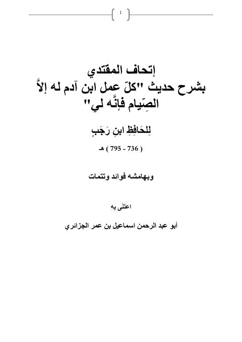
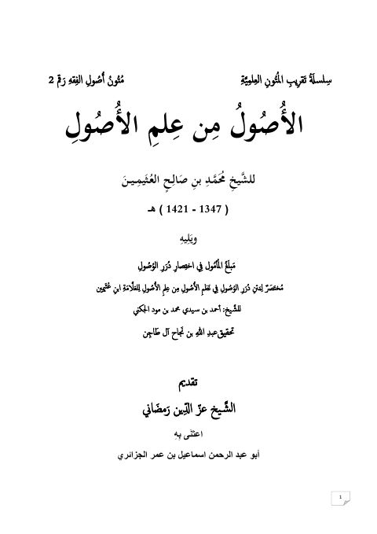
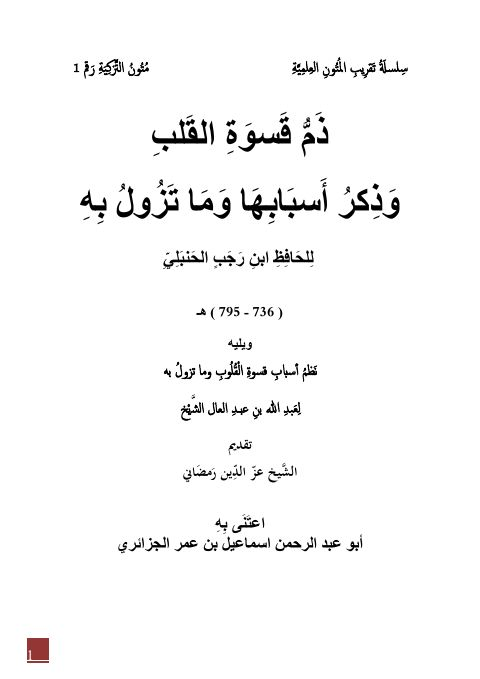

إتحاف المقتدي بشرح حديث كل عمل بن آدم له إلا الصيام فإنه لي إتحاف المقتدي بشرح حديث كل عمل بن آدم له إلا الصيام فإنه لي الحافظ ابن رجب الحنبلي
الأصول من علم الأصول ويليه مبلغ المأمول الأصول من علم الأصول ويليه مبلغ المأمول محمد بن صالح العثيمين
ذم قسوة القلب وذكر أسبابها وما تزول به ويليه نظم أسباب القلوب ذم قسوة القلب وذكر أسبابها وما تزول به ويليه نظم أسباب القلوب ابن رجب الحنبلي